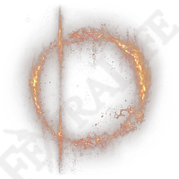

BOSSES
The Lands Between, the world of Elden Ring, is inhabited by Gods, monsters, and mortals. The Elden Ring, the embodiment of the world's fundamental laws, was shattered, and its fragments, known as Great Runes, are now held by powerful Demigods — offspring of Gods and Mortals. These Shardbearers battle to reunite the pieces and gain control of the Elden Ring, forming the game's main story Bosses.
| Boss | Great Rune |
|---|---|
| Godrick the Grafted | |
| Rennala, Queen of the Full Moon | |
| Starscourge Radahn |  |
| Morgott the Omen King | |
| Rykard, Lord of Blasphemy | |
| Malenia, Blade of Miquella | |
| Mohg, Lord of blood |